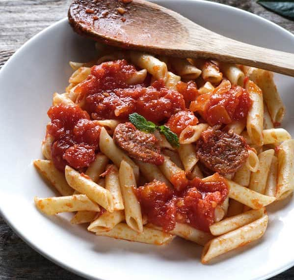

Inicio
Macarrones con Chorizo

Esta receta, que combina pasta, chorizo y tomate, es una de esas joyas culinarias de la cocina española que no necesita ingredientes exóticos ni técnicas complicadas. Es el tipo de plato que nos recuerda que, a veces, menos es más
Aunque existen muchas versiones, la esencia de los macarrones con chorizo permanece: una pasta al dente (es clave saber cómo cocer bien la pasta) mezclada con una salsa de tomate y chorizo que se puede servir así o gratinada con queso, (al estilo macarrones con queso) para convertirse en un manjar de los dioses.
Ingredientes
- 400g de macarrones
- 150g de chorizo en sarta
- 1 cebolla mediana
- 2 dientes de ajo
- 400g de tomate triturado
- 100ml de vino blanco (opcional)
- 100g de queso mozzarella rallado (opcional)
- Aceite de oliva virgen extra
- Sal y pimienta al gusto
- Orégano seco al gusto
Preparación
- Pinchar el chorizo con un tenedor y hervir durante 12-15 minutos para desgrasarlo. Retirar y cortar en rodajas o trozos.
- Cocinar los macarrones en abundante agua con sal hasta que estén al dente. Escurrir y reservar a un costado.
- En una sartén grande, calentar un poco de aceite de oliva y sofreír la cebolla picada junto con los ajos picados hasta que estén transparentes. Añadir el chorizo y saltear unos minutos.
- Agregar el tomate triturado y el vino blanco, si se va a usar. Cocinar a fuego medio durante 15-20 minutos, hasta que la salsa espese. Condimentar con sal, pimienta y orégano al gusto.
- Incorporar los macarrones a la salsa y mezclar bien para que se impregnen de sabor. Si la mezcla está muy seca añadir un poco de agua de la cocción de los macarrones.
- Si se desea gratinar verter la mezcla en una fuente para horno, espolvorear con el queso mozzarella rallado y gratinar en horno precalentado a temperatura alta (200ºC) durante 8-10 minutos o hasta que el queso esté dorado.